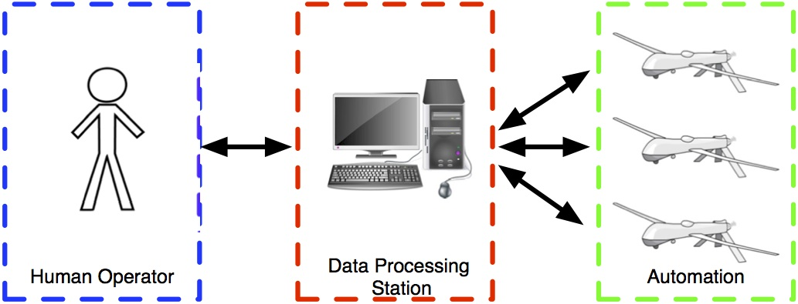
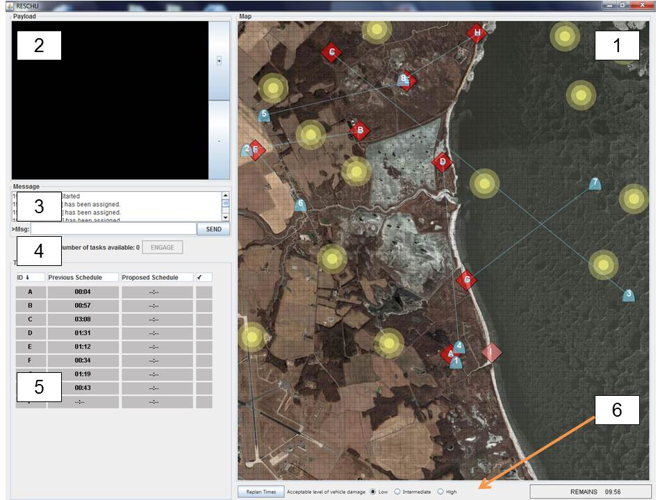
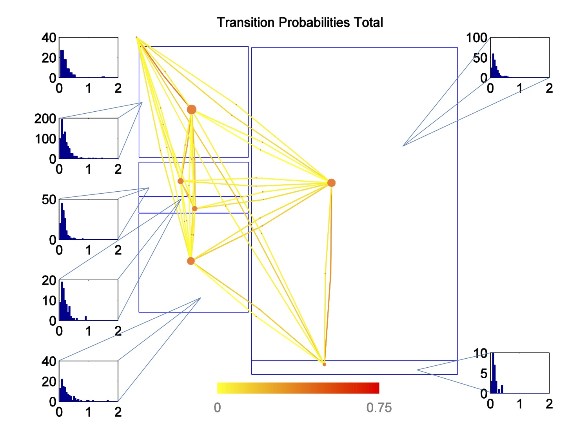
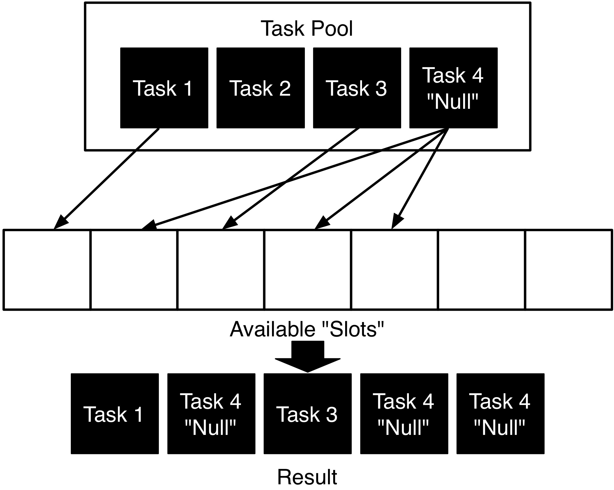
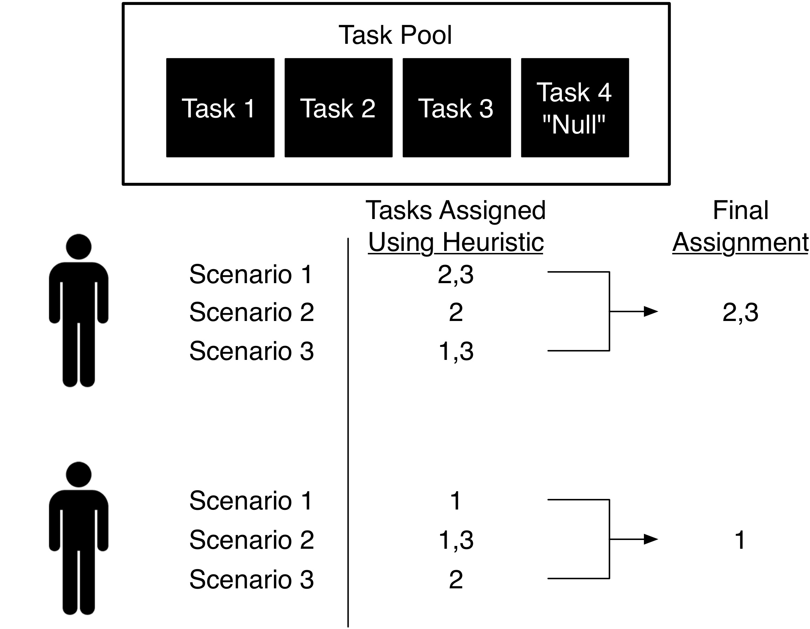
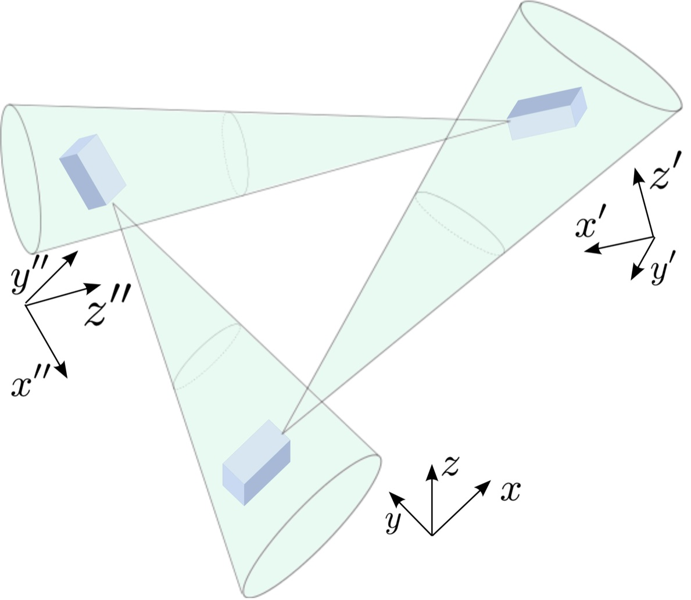

Jeffrey R. Peters
Graduate Student Researcher
University of California, Santa Barbara
Home
Biography
Projects
Publications
Software
Recent Research Projects
Human Supervisory Control of Autonomous Agents
With the ever-increasing maturity of sensors and autonomous technology, the use of teams of unmanned or autonomous agents to complete complex tasks is becoming more and more common. Applications such as military reconnaissance, environmental monitoring, and warehouse logistics are either already utilizing or beginning to utilize autonomous agents to enhance performance and efficiency. Even though autonomous teams may operate largely on their own, in many (or even most) realistic scenarios, there is a human operator that plays a crucial role in the proper operation of the system. For example, in futuristic military scenarios, a human operator (or team of operators) is responsible for analyzing sensor data collected by unmanned vehicles such as UAVs. In cases where the human takes a supervisory role, the control systems community usually refers to the overall system as a human supervisory control system.
The introduction of humans into the system operation creates a host of issues that are not present in systems which do not contain (or do not explicitly consider) humans. For example, humans have limited analysis capability and can easily become overwhelmed if data is not presented carefully. Further, there are a number of performance factors such as memory retention and situational awareness that affect a particular operator's performance. Despite the high level of maturity of modern autonomous systems, it is not well understood what is the best way to couple the automated system components with the human components in order to best utilize the human abilities and boost performance of the overall system.

Most of my current research deals with the various design aspects involved with human supervisory systems. In particular, I focus primarily on militarily-motivated systems involving teams of UAVs. Broadly, there are three components to a general human supervisory control system: the automated agents, the human operator(s), and the interface between them (labeled "data processing station" above. Through collaborative efforts with experts in Psychology, Human Factors, Military Operations, and Control Systems, we seek to analyze each of these components, develop appropriate mathematical models, and develop autonomous systems to facilitate seamless integration. As such, most of my work focuses on specific aspects of this process, but is focused on designs that are beneficial from a systems engineering standpoint.
Coordination of Mobile Sensor Teams for Surveillance
A large part of developing effective systems involving mobile sensor teams is coming up with strategies for sensor coordination, namely task allocation and routing. If the mobile sensors operate as a part of a complex system involving human operators, it is not only necessary for the automation to accomplish a given task, but also do so in a way that is fast, flexible, and practical. A scheme having the aforementioned qualities is then capable of functioning in a way that benefits the complex system as a whole. This is the focus of my research in autonomy: developing autonomous algorithms that are capable of operating as a component in a complex system.
More specifically, my work has mostly focused on the development for persistent surveillance or persistent monitoring tasks, with an emphasis on UAV applications. For situations that have a few particular points of interest, we have worked to develop and implement an automated route planner that assigns tasks to the available agents and subsequently constructs UAV routes to image the targets within the user-provided specifications. Here, the user provides viewing directions and dwell-times. Extensions will look to implement this scheme in a dynamic fashion under parameter uncertainty.
For situations in which there is a 2D area that needs to be covered, we have developed a coordination scheme that operates in realistic environments in which agents only have sporadic and unreliable communication with a central base station (a situation that commonly occurs in human supervisory applications). Here, we use space-decomposition in order to optimally partition the environment, and then use a spectral multi-scale trajectory planner to govern agent motion within the assigned regions. Extensions will look to extend this method to an "anytime" implementation, and govern agent routes to avoid collisions.Human Operator Modeling and Decision Support Design
In any system involving human operators, it is important that steps are taken to ensure that the system is easy to use for the operator and that it promotes optimal human performance. From a control perspective, the first step in this process is to understand key behavioral characteristics and formulate appropriate models for use in system design. Human modeling is tricky business, and the appropriate strategy is ultimately dependent upon a number of factors including the phenomena being studied, the particular application, and the time-scale over which dynamic processes evolve.
In macro-scale applications, such as an operator controlling UAVs, one way of getting a better idea of how humans use a particular system is by leveraging eye-tracking technology. For specific supervisory applications involving UAVs, some of my work (in collaboration with United Technologies Research Center (UTRC)) has explored the use of eye-tracking for modeling the human on a course scale and assessing usability of a given interface.

Once an effective human model is formulated, automated options for improving human performance can be explored and implemented. For example, suppose we have an application where the operator must look at a series of images to determine if a target is present. If we have a model for how long it takes the operator to collect enough sensory information from a particular image to make an informed decision, then we may be able to develop an automated system to alert the operator when they have spent too much or too little time on a given image. These types of automated systems that are designed for the purpose of helping the operator make a decision are called decision support systems, and are another one of my research interests. In particular, I have focused on methods for developing decision supports that are robust to uncertainty that is inherent to human behavior. One such approach that we have studied (in collaboration with UTRC) uses a task-based MILP that is augmented with a resting task to specify the optimal task processing order for the human while mediating task-load. We have explored extension of this scheme for multiple operators as well.

Older Projects
Coordination and Estimation in Active Camera Networks
Active (PTZ) cameras or visual sensors are becoming more affordable, and thus are being utilized in a variety of modern applications. These types of networks are often used for surveillance, in which case it is important to carefully coordinate the camera motion to detect events of interest, such as the appearance of an intruder. The video below illustrates a coordination scheme designed to catch "smart" intruders that are aware of the network configuration in a simple 1D environment.
Visual sensor networks are often sensitive to errors in calibration. Therefore, it is important to estimate the global configuration of the network as accurately as possible. Unfortunately, global measurements are not always available, which was the motivation for another project. In particular, we looked into the issue of estimating consistent network configurations (via displacement matrices) based on noisy relative measurements.

Other Fun Stuff
The video below shows some high school students that I had the pleasure of teaching as a part of the School for Scientific Thought demonstrating the maze navigation algorithms that they came up with. They did a lot of work in only a few short class periods!